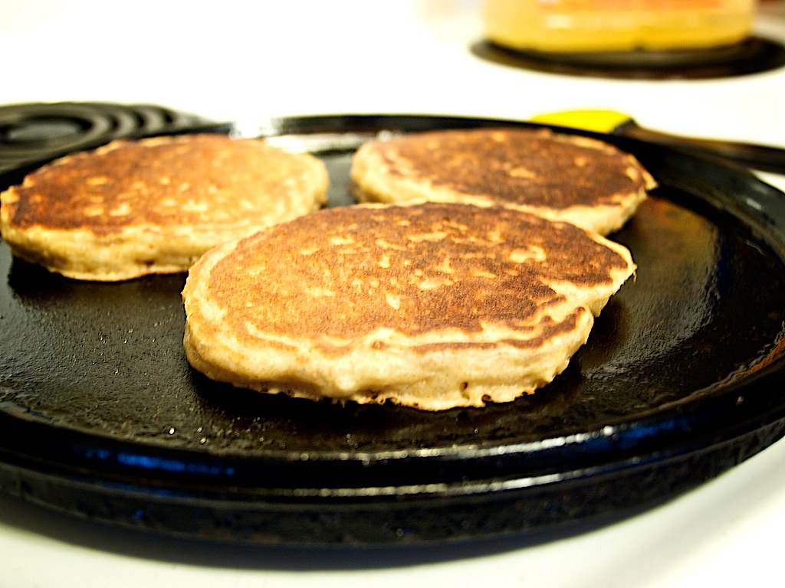

Pancake Recipe
Home
www.allrecipes.com

“pancakes, forever favourites” by Dale Simonson, CC BY-SA 2.0
Description
A flat type of batter bread like cake, thin and round.
Ingredients
- Flour
- Baking Powder
- Sugar
- Salt
- Milk
- Butter
- Egg
Steps
Taken from
threebigbites.com
Mix
- Sift flour, baking powder, sugar, and salt
together in a large bowl.
- Make a well in the center and add milk,
melted butter, and egg; mix until smooth.
Cook
- Heat a lightly oiled griddle or pan over
medium-high heat.
- Pour or scoop the batter onto the griddle,
using approximately 1/4 cup for each pancake.
- Cook until bubbles form and the edges are dry,
about 2 to 3 minutes.
- Flip and cook until browned on the other side.
Repeat with remaining batter.
Serve!